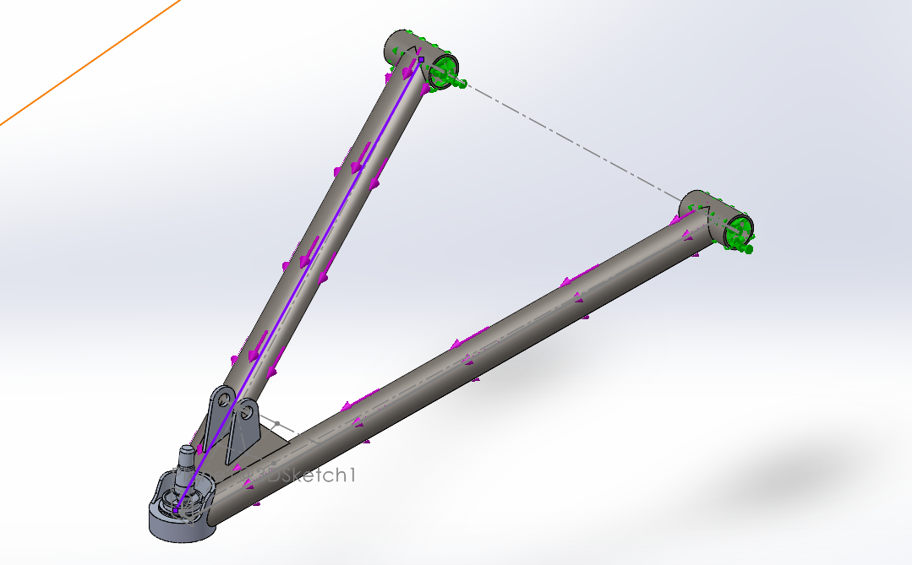
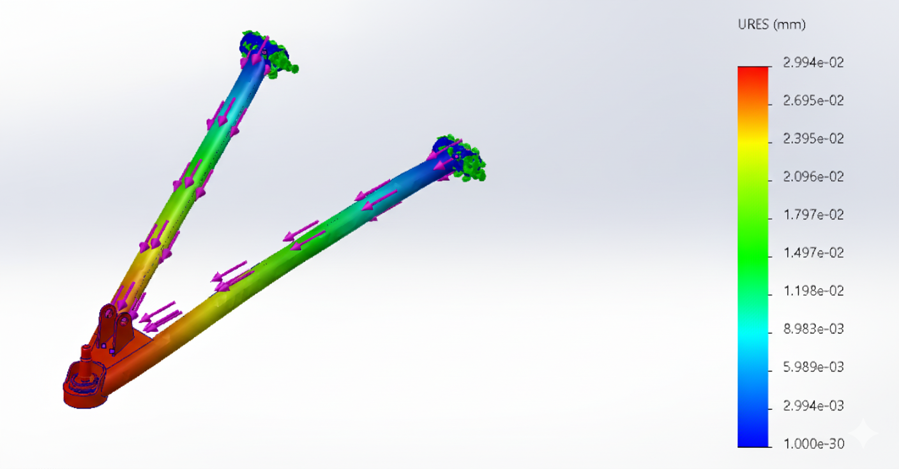
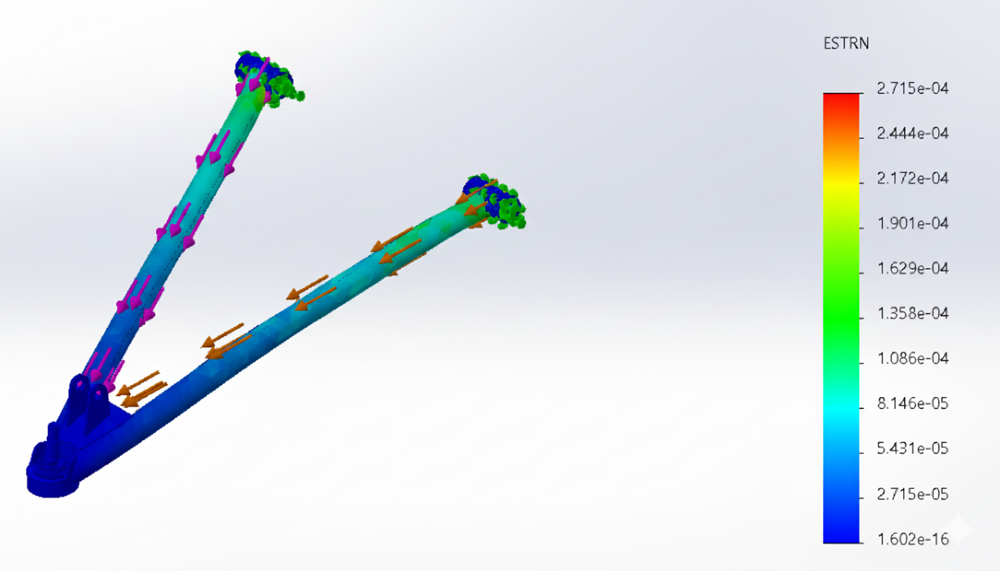

September 2025
Project Overview
This project involved the end-to-end design, prototyping, and manufacturing of a new vehicle suspension component.
The process began with an in-depth analysis of previous suspension systems to evaluate their strengths, limitations,
and opportunities for enhancement. Building on these insights, a custom design was developed to improve overall performance,
durability, and efficiency. The concept was translated into detailed CAD models that integrated advanced materials and
engineering principles to address key performance requirements. The resulting product was fabricated using modern
manufacturing techniques and subjected to rigorous testing, including load-bearing and durability assessments,
to validate its functionality and reliability. Iterative refinement based on test data ensured that the final suspension
component delivered improved vehicle handling and comfort while maintaining long-term reliability in demanding operating
conditions.

- Design suspension arms with optimal strength and durability to withstand rigorous off-road conditions.
- Ensure precise geometry for proper alignment and handling performance under load.
- Use lightweight, high-strength materials to reduce weight while maintaining structural integrity.
- Incorporate easy-to-service components for quick repairs and maintenance during events.
- Ensure compatibility with other suspension components, including shocks and linkages, for smooth integration.
Our design process began by thoroughly analyzing suspension designs from previous years. We performed FEA on these older designs, evaluating the forces and stresses they endured during operation. We also carried out dimension calculations based on these forces to determine the necessary strength and stability required for our suspension arms. This gave us valuable insight into areas where we could improve performance, weight distribution, and durability.
With all of this data in hand, we set out to design our own pairs of control arms using SolidWorks. The software allowed us to create precise 3D models, ensuring the parts met all the requirements for optimal functionality. During this phase, we focused on geometry to ensure proper alignment, strength, and integration with other suspension components.
Once the design was finalized, we ran multiple FEA simulations to simulate real-world conditions and evaluate how our design would perform under various stress scenarios. These simulations helped us refine the geometry and material selection, allowing us to make necessary adjustments before moving on to the manufacturing stage.
With the design fully validated, we transitioned to the manufacturing process. The first step was cutting the control arms to the correct dimensions using precision saws. After cutting, we carefully sanded the edges to ensure smooth finishes and avoid any sharp points that could affect performance or safety. We then moved on to the assembly phase, where we used jigging plates to hold the parts in place while we welded them together. This ensured the proper alignment and integrity of each control arm. Finally, we assembled the control arms, ensuring that every part was securely fitted, and the components worked seamlessly together as a fully functional unit.
This detailed, multi-step process enabled us to design, test, and manufacture control arms that not only met but exceeded our performance goals, ensuring that they would withstand the harsh conditions of off-road racing while maintaining safety and reliability.
FEA Simulations & Results
In this analysis, we performed FEA on the front upper control arms of a suspension system. The following images showcase the results for key aspects of the control arm’s performance, including strain distribution, displacement, and Von Mises stress. These results provide valuable insights into the behavior of the component under typical operating conditions. Additionally, FEA was performed on the other sets of control arms, including the front lower control arms and the pairs of (upper and lower) rear control arms, to ensure a complete understanding of the suspension system’s overall performance.
- Von Mises Stress (Image 1): The simulation image shows the distribution of stress across the control arm under loading conditions. The color gradient ranges from deep blue (low stress, around 4.7×10-5 N/m²) to red (high stress, up to ~7.63×107 N/m²). Most of the structure remains within the low stress range (dark blue), indicating that the component is well within safe limits under the applied load. However, areas near the bushings transition into light blue and green, highlighting localized regions of higher stress concentration. These hotspots are critical areas to monitor for potential yielding or fatigue over time and may benefit from design reinforcement or material optimization to ensure long-term durability.
- Displacement (Image 2): The displacement simulation shows how the control arm deforms under load, with the color scale ranging from deep blue (minimal displacement, near 0 mm) to red (maximum displacement, approximately 0.0299 mm). Most of the structure remains in the green to blue range, indicating minimal deflection and strong structural rigidity throughout the majority of the component. The highest displacement occurs near the ball joint, shown in yellow to red, where the part experiences the most significant movement. Despite these localized deformations, the total displacement is very small, suggesting that the control arm maintains its shape and alignment well under expected operating conditions.
- Strain Distribution (Image 3): The strain simulation illustrates how the control arm material deforms under load relative to its original dimensions. The color gradient ranges from deep blue (minimal strain, near 1.60×10-16) to red (maximum strain, approximately 2.72×10-4). Most of the component remains in the blue to green range, indicating very low strain and excellent structural stiffness throughout the majority of the part.
These FEA results for the front upper control arms offer essential insights into the behavior of the component under load. By understanding strain, displacement, and stress distribution, we can make informed decisions on how to improve the design, optimize material usage, and enhance the overall safety and performance of the suspension system. As noted, additional analyses were conducted for the front lower control arms and the lower front and rear control arms to complete the overall suspension system analysis, ensuring all components meet performance and safety standards.

FEA Deflection

FEA Strain Analysis
Once the design was validated, we transitioned to manufacturing the control arms. We paid close attention to precision and craftsmanship, as every detail had to align perfectly to ensure both safety and performance.
1. Material Selection and Preparation
Before manufacturing could begin, we selected the appropriate materials for the control arms. We opted for high-strength, lightweight alloys that could withstand the extreme forces experienced during off-road driving. Once the materials were chosen, we had them cut into rough stock pieces. This initial preparation phase was critical to ensure the material had the necessary properties for durability and resistance to wear.
2. Cutting the Control Arms to Dimensions
Using precision saws, we carefully cut the raw material into the rough dimensions of the control arms. We used both manual and CNC cutting tools to achieve high accuracy and consistency. The cutting process required careful monitoring to ensure each piece adhered to the design specifications. At this stage, the focus was on accuracy, as even small deviations could result in improper fitment and performance issues.
3. Sanding and Smoothing the Edges
After cutting, we moved on to the sanding process. Each edge of the control arms was carefully sanded to ensure smoothness and remove any rough spots or sharp edges. This was a delicate step, as sharp edges could not only impact the performance but also pose safety risks. We used both manual sanding tools and rotary sanders to achieve a smooth, even finish on every part. This process also helped to reduce the overall weight by eliminating unnecessary material from the edges, ensuring the control arms maintained their strength without being overly heavy.
4. Welding and Assembly
Next, we assembled the components onto jigging plates for accurate positioning. The use of jigging plates ensured that the control arms were assembled with perfect alignment. With the pieces secured in place, we proceeded to the welding phase. This required precision and care to avoid any distortion during the welding process. We used MIG and TIG welding techniques, depending on the material and the strength requirements of each joint. The welding process was followed by a detailed inspection to ensure that the joints were strong and clean, with no defects or weaknesses.
5. Post-Welding Inspection and Quality Control
After welding, we performed several rounds of inspections and quality control checks. This included checking for dimensional accuracy, strength, and weld integrity. We used specialized tools to check for warping, distortion, and cracks that may have occurred during welding. Additionally, we verified that all parts were correctly aligned and that the overall assembly met the design specifications. If any discrepancies were found, the parts were sent back for rework or adjustments.
Prototype met stiffness and comfort targets in bench tests. Next: on-vehicle testing, fatigue
assessment, and exploring a carbon-sandwich variant with 3D-printed core for further weight
savings without compromising stiffness.
Throughout the manufacturing process, we remained focused on precision, safety, and performance. Every step was carried out with meticulous care to ensure that the control arms would meet our high standards and contribute to the vehicle's overall success. This comprehensive approach allowed us to produce suspension arms that were not only effective but also reliable and durable under the toughest conditions.